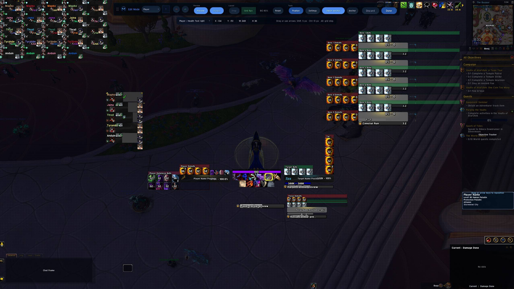

Install MSUF in WoW Midnight
- Pick the Retail client in your addon manager and install Midnight Simple Unit Frames. You can also download the stable Retail file from CurseForge.
- Enable the addon in WoW and type
/msufto open the configuration. - Choose the frames you want MSUF to manage. If another addon draws the same player, target or group frames, turn off the overlapping frames in that addon.
Build a layout for your role
- Dungeons: Start with player, target, focus and party. Position the target castbar where you can see it and preview how party frames fit together.
- Raids: Configure the Raid layout for your group. Midnight also offers a dedicated Mythic Raid layout.
- Arena: Enable the dedicated arena frames and preview the opponent layout before queuing.
Use MSUF Edit Mode to position frames. For an existing layout, browse community MSUF profiles on Wago and choose one labeled for Midnight or Retail.

Install from the ZIP
Download the packaged ZIP under Assets on GitHub. Extract both MidnightSimpleUnitFrames and MidnightSimpleUnitFrames_Options directly into Interface/AddOns inside the WoW client you play. Restart the game, enable MSUF in the AddOns list, and type /msuf.